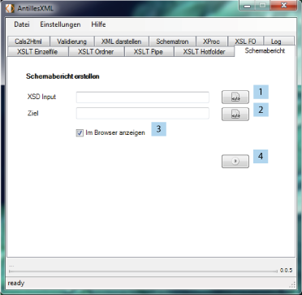

Mittels dieses Features wird aus einer XML Schemadatei ein in html erzeugtes Ausgabedokument
erstellt. Die eingelesene Schemadatei wird hier mit einem vorgegebenen XSLT Stylesheet
transformiert. Dieses Stylesheet generiert einen tabellarischen Bericht, was den Aufbau der
zugrunde liegenden Schemadatei wiederspiegelt. Das daraus erzeugte html-Dokument ist für
Schemaentwickler interessant, da es sehr intuitiv lesbar ist.

Zunächst muss die Schema Datei angegeben werden (1). Nun das Ziel (2) um dann die Überprüfung zu starten (4). Weiterhin kann angegeben werden ob das Resultat direkt im Standardbrowser angezeigt werden soll oder nicht.